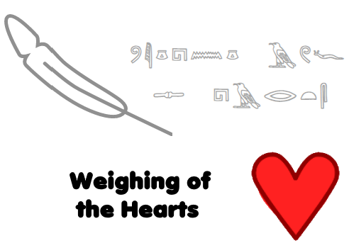

Play
Hard Reset (Be sure you want to do this!)
You have
spirit points.
You have
ba and
ka, multiplying spirit point gain by
and giving
akh score.
You need
spirit points to reset for 1 ba/ka.
Reset for 1 ba.
Reset for 1 ka.
You have
akh, raising base ba and ka effect to
.
Reset for
akh.
Next at
akh score.
Move beyond the mortal world and begin your journey through Duat!